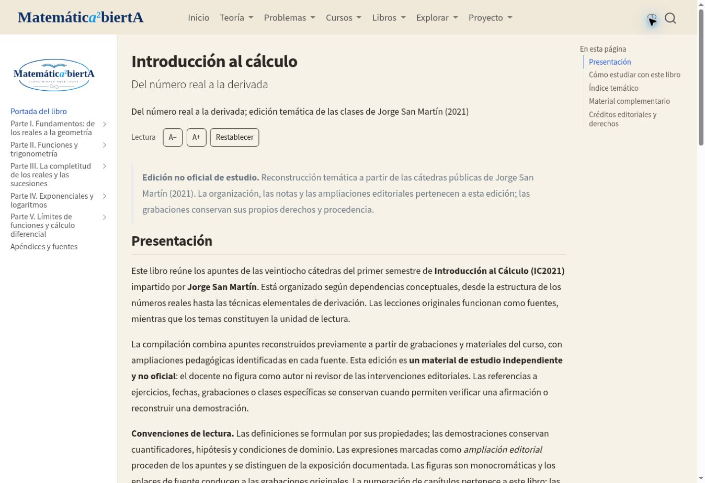
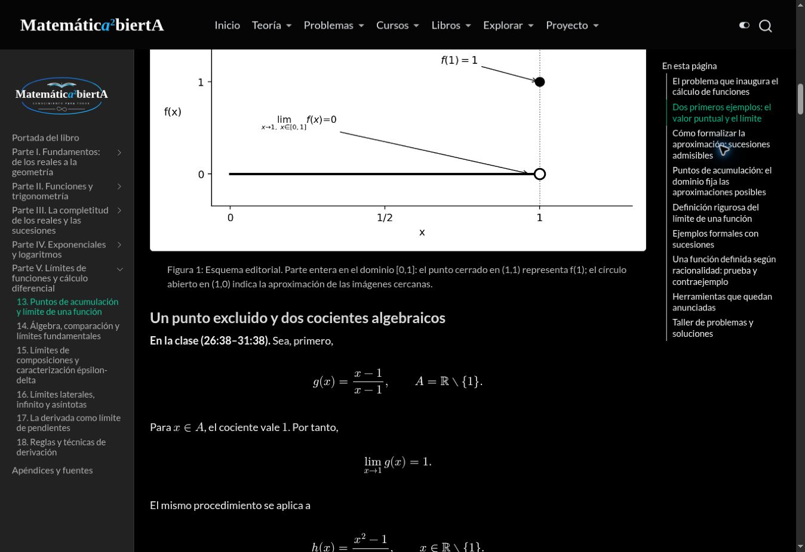

IC2021 — Informe de integración y validación
Edición temática no oficial de apuntes elaborados a partir de las clases de Jorge San Martín (2021). Trabajo sobre el PR #352 existente; no se fusiona ni despliega en producción.
Auditoría del repositorio
- Base principal auditada:
49532a6990b5d31058cf57f7fb2615b0e7c11946(main). La rama de trabajo existente partía del mismo repositorio y conservaba 20 páginas iniciales del libro. - Proyecto global
type: website, Quarto 1.10.18, MathJax, búsqueda y navegación anterior/siguiente. Se conserva esta arquitectura; un proyecto anidado no sería renderizado como parte del sitio global. - Estilo heredado:
styles.scss,paper.scss,brand.scssyassets/books/reader.css. El nuevo libro no modifica estos recursos compartidos. publish.ymlpublica engh-pagesal recibir un push enmain. Este trabajo solo actualiza la ramafeat/introduccion-calculo-sanmartin-quarto-20261101del PR #352.- Ruta final solicitada y compatible:
/libros/otros/introduccion-al-calculo/. La ruta más larga del primer borrador se reemplazó antes de su publicación; no había publicación de producción que redirigir. - Integración limitada a la sidebar nombrada, los dos catálogos, las fuentes/recursos del libro, sus scripts, registros y pruebas. Se conservan otras obras y PR abiertos.
Fuente de verdad e integridad
Maestro corregido: SHA-256 1a66001fdbecd197f645a44b3094b33e8694efe20212c40140d5d9456d16476a. Coincide byte por byte con la copia recuperada de la conversación. ZIP base original SHA-256 0c27bae1aeb06250c52aeb73d1e0019c75d15790eda8e8c61bf89df2a34c9e9e, conservado mediante once partes versionadas.
Se localizaron en Google Drive la carpeta San Martín - Introducción al Cálculo y sus subcarpetas figuras, fuentes y Libro IC2021 - Quarto. El paquete inicial contenía 175 PNG, mientras que el maestro citaba 177. Las dos figuras faltantes se recuperaron sin modificación del ZIP original IC21_Catedra_12_1_Completo_BN.zip:
figuras/IC2021_Catedra_12_1/01_valor_y_limite.png.figuras/IC2021_Catedra_12_1/03_puntos_de_acumulacion.png.
El registro de recuperación conserva nombres, identidad del paquete y hashes. El materializador genera además un ZIP completo descargable con el maestro y las 177 figuras, manteniendo intacto el ZIP inicial.
Índice final
Parte I. Fundamentos: de los reales a la geometría
Parte II. Funciones y trigonometría
Parte III. La completitud de los reales y las sucesiones
Parte IV. Exponenciales y logaritmos
Parte V. Límites de funciones y cálculo diferencial
- Puntos de acumulación y límite de una función
- Álgebra, comparación y límites fundamentales
- Límites de composiciones y caracterización épsilon-delta
- Límites laterales, infinito y asíntotas
- La derivada como límite de pendientes
- Reglas y técnicas de derivación
Portada con presentación y orientación de estudio; apéndices con concordancia, referencias audiovisuales, material complementario y criterios editoriales. El índice principal muestra partes y capítulos; las secciones permanecen en el índice local de cada página.
Registro de transformaciones editoriales
- Separación reproducible de los 18 capítulos sin suprimir ni reordenar sus cuerpos.
- Títulos de capítulo trasladados al YAML; encabezados internos rebajados un nivel, conservando todos sus textos.
- Índice web nuevo de cinco partes y 18 capítulos, con búsqueda, navegación local y secuencial.
- Anclas
fig-ic2021-cNN-fNNy texto alternativo explícito para las 177 figuras. Se conservan pies, proporciones, atributos de tamaño y PNG originales. El texto alternativo usa el pie sin delimitadores matemáticos; en un pie breve se agrega «Esquema matemático». - Recuperación de los dos recursos ausentes del ZIP base; ninguna sustitución de fórmulas por imágenes.
- Créditos de edición no oficial, separación de aportes editoriales y derechos de vídeos externos. No se agregan capturas de pizarra ni se atribuyen ampliaciones al docente.
- Descarga reproducible completa. No se añade un enlace a un PDF definitivo sin un archivo publicable confirmado.
- No se retiran pasajes matemáticos por parecer duplicados: el maestro corregido conserva autoridad. La transformación no introduce cambios de fórmulas, demostraciones, ejemplos, ejercicios ni soluciones.
Validación
| Control | Evidencia / resultado |
|---|---|
| Compilación completa | Quarto 1.10.18; 20 páginas HTML, sin errores |
| Fidelidad matemática | 9.344 nodos matemáticos conservados en orden mediante AST Pandoc; 970 secciones internas |
| Estructura | Cinco partes, 18 capítulos, portada y apéndices |
| Figuras | 177 referencias únicas; 177 PNG con SHA-256, pies, alt y anclas; cotejo HTML por figura |
| Integración gráfica | Control MA-FIG PASS; 91 pruebas de regresión del sistema de figuras PASS |
| Estilo de lectura | Herencia CSS canónica PASS |
| Enlaces internos | Rutas y fragmentos del libro renderizado PASS |
| Fuentes audiovisuales | 30 vídeos únicos responden HTTP 200 mediante YouTube oEmbed; títulos guardados en el registro |
| Navegador | CI comprueba 20 páginas en 390, 768 y 1440 píxeles; consultar el estado final del workflow |
| Revisión visual | Portada y capítulos de geometría/límites inspeccionados; planchas de contacto de los 177 originales revisadas |
El cotejo de AST cuenta las fórmulas del cuerpo y de los pies. Excluye el contenido alternativo duplicado de las imágenes, que es una representación textual accesible; no excluye las fórmulas de sus pies visibles. Los inventarios de términos como «Teorema» o «Ejercicio» son recuentos de marcadores, no una nueva numeración académica.
Los enlaces audiovisuales conservan sus marcas temporales originales. La respuesta oEmbed acredita disponibilidad del vídeo y su título, no el cotejo de cada segundo enlazado.
Límites y autorización
La fidelidad certificada corresponde al maestro. Sigue pendiente la auditoría audiovisual integral de las 28 clases indicada en la fuente. Los esquemas suministrados son elaboraciones editoriales de los apuntes; los materiales oficiales y grabaciones enlazados conservan sus derechos. No se declara al profesor autor o revisor de las intervenciones editoriales.
No se ha fusionado el PR, modificado main, cambiado DNS ni publicado en producción. La autorización expresa del usuario sigue siendo necesaria para ese paso.
Recursos y regeneración
- Inventario completo de capítulos, encabezados, marcadores y 177 figuras.
- Disponibilidad y títulos de los 30 vídeos.
- Registros individuales de figuras.
- Instrucciones reproducibles y actualización del maestro.
- Workflow:
.github/workflows/sanmartin-quarto-qa.yml; artefactoic2021-complete-preview-and-qacon HTML completo, informe y capturas en los tres tamaños.

